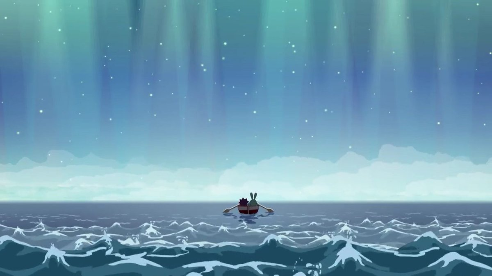

Лосяш пытается доказать, что Земля круглая. Крош, утверждая, что Земля плоская, решил официально задокументировать этот факт и отправился на край Земли. Перед отправкой Ежик рушит четвертую стену:
"Мне иногда кажется, что наш мир кем-то нарисован, и за нами вечно кто-то наблюдает... вон оттуда"
Когда же они находят край Земли, то фотоаппарат падает море и не остается больше шансов как-либо доказать плоскость Земли. Здесь изображается тот факт, что иногда взрослые тоже ошибаются, а детская фантазия может оказаться правдой.